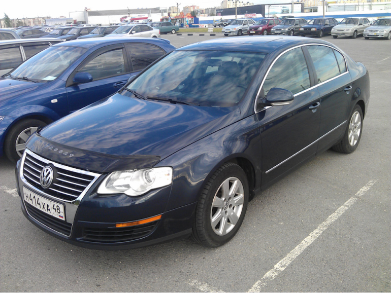
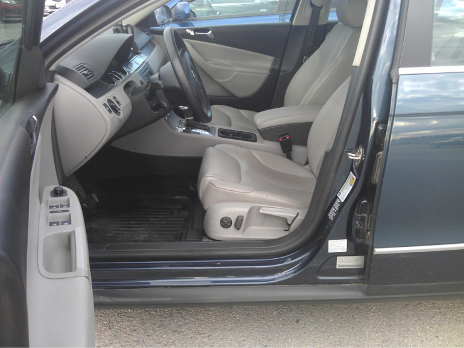

Мозголюбы… Эпизод 2. Перекупство… автоподбор…
Привет!
Начало было здесь ===> Мозголюбы. Эпизод 1
Если вы читаете про себя, то относитесь спокойно. я никого не осуждаю. покупка авто серьезная тема… думать всегда сложно, а когда эмоции и страх ошибиться, то просто невозможно… Пишу я это не чтобы кого-то высмеять или унизить, а для того чтобы будущие мозголюбы видели себя со стороны… Да и вообще этот пост я буду скидывать всем, кто захочет со мной говорить об авто с пробегом, как обязательный к прочтению…
1. Вольво!
Про Вольво ХС-90 я писал в 1-ом эпизоде, ссылка выше. Автомат не помер. Узнал подробности той истории… Человек купил ХС-90 и поехал из Москвы в Мурманск, отъехал в сторону Санкт-Петербурга примерно 400 км и услышал какой-то гул и ощутил вибрации, решил, что это АКПП… дабы не рисковать он продолжил путь до Питера на эвакуаторе. По приезду в Санкт-Петербург, заехал к дилеру, где ему сказали, что помер автомат, и объявили цену за ремонт (наверное замену… я не вникал) 450 т.р. Тогда человек поехал на эвакуаторе до Мурманска… Там загнал авто в сервис по ремонту АКПП, и ему сказали, что автомат живой, а гудит подвесной подшипник привода… Подшипник поменял, но гул остался… Проблему как решит — так отпишется… Мне интересно, чем закончится эта история. Можно ли было предсказать, что что-то загудит через 400 км? Возможно, экстрасенсы смогли бы помочь, или диванные эксперты… но ни те ни другие не ездят проверять авто с пробегом и тем более не дают гарантий… а жаль…
2. Драйвовчанин, Октаха и Кашкай.
Написал мне человек с драйва и спросил: «что есть в наличии?» Заинтересовал его один авто. Октавия 1.8 на автомате, цепь живая, турбина по компу давит, пробег 73, два окраса по металлу, живая по технике. Есть запотевание на патрубке, который идет на интеркулер. Можете по этой ссылке перейти, там на пробеге 11 тыс. км этот патрубок потеет, есть картинка запотевания, а в комментах люди пишут, что меняли по гарантии патрубок (не турбину), вот по этой ссылке замена по гарантии на пробеге 11 тыс. км . Я позвонил нескольким знакомым, которые шарят в вагах: 1-ый сказал: «Маслоотделитель меняй и все будет хорошо», 2-ой сказал после того, как посмотрел: «Помой и забудь. Просто потеет. Пары масла с сапуна там есть. Не страшно».
Рассказал я все, что знал про авто потенциальному клиенту… Он решил смотреть. Звонит мне и диалог:
— Клиент) Я завтра приеду, если все хорошо, то покупаю. Можем загнать в тойота центр на диагностику?
— Я) Можем. Но они же ничего не могут посмотреть… Ну поднимут они авто, там все сухо. Посмотрят ходовку, все хорошо. и все? смысла нет никакого… но загоняйте.
— К) У меня там брат работает, и он тоже самое сказал, что и Вы. Завтра приеду, а там решим…
Приехал, посмотрел, и говорит, что турбина смущает, что боится он этого запотевания На этом надо было закончить. но… А поехали мы там парню покажем, он шарит. Приехали, вопрос у нас по турбине, и диагност об этом знал, но он начал смотреть болты на крыльях! Для меня это очень характеризует человека… По какому вопросу приехали? Как связаны болты на крыльях и запотевание патрубка? Потом посмотрел на патрубок и сказал, что не знаю ничего… Может 100 тыс. км турбина проживет, а может завтра помрет. Я когда еще ехали к нему знал, что либо скажет, что все пропало и турбина при смерти, либо, что ничего не знает… Разумеется, что подключиться компом и посмотреть надув хотя бы диагносты неспособны, это сложно.
Клиент загрузился еще сильнее и сказал, что надо подумать. Потом сказал, что точно покупает, скинул паспорт, чтобы я договор сделал и договорились в 11 утра оформить… В 10 утра он написал: «Извини, но не буду покупать. Ночь не спал, форумы читал. Не потяну я такое авто.»
Вы знаете сколько раз я это слышал, продавая ВАГ? Раз 5-ть точно именно так покупашки соскакивали… после бессонной ночи… Лучше бы перед осмотром читали форумы, а то посмотрят, к мега-диагностам съездят, время отнимут, а потом читают. Почему ума нет думать до осмотра, я не знаю. Боитесь ВАГа? ну и не надо на него смотреть. есть японцы, корейцы и прочие скучные, надежные ведра… ВАГ если купить живым и обслуживать с пониманием, то вполне нормальные авто.
Мое знакомство с ВАГом произошло в 2012 году, и это был америкос Passat B6 2.0 TFSI, 200 л.с., 6-АКПП aisin, кожа, люк.
Кайфовая тачка была, я узнал, что есть фазорегулятор, толкатель ТНВД, что иногда бензин работает как дизель и много интересного, но авто было клевое… Довел до ума и продал. Потом были ВАГи, но на них я уже понимал до покупки, какие расходы будут по технике.
Далее клиент заговорил про подбор. Вообще общаться с человеком, который уже сказал, что точно покупает и не купил желания не было, но решил попробовать… Куча вопросов о подбираемом авто и схеме работы, потом все устраивает, закажу, в Москву сам съезжу, доставка не нужна. Проходит чуть времени предлагает посмотреть Серато в Липецке, та у знакомых перекупов, не хочу смотреть. Потом Кашкай посмотреть у частника. Сказал, что в сервис, чистое авто, чтобы светло было… Клиент может только в 19, а там мойка есть где сервис? Меня уже задолбало и я выдал:
«Обратись к вот этим ребятам, пусть они посмотрят. Я уже жалею, что вообще занимаюсь подбором и диагностикой. Хочешь приезжай в 19. мне пофиг. Будет грязное авто, буду грязное смотреть. Темно на улице? Да в темноте посмотрю. В сервисе не будет бокса свободного, ну не будем поднимать… Неужели так сложно подстроиться под меня? Тебе же надо хорошо посмотреть… Мне вообще эта диагностика не нужна.» Клиент поехал к дилеру Ниссан в Липецке, там и помоют и светло… Ну и хорошо, меня не трогает и ладно. Понятно, что смотреть на год выпуска резины и оценивать соответствие износа чего-либо пробегу официалы не будут, но толщиномером кузов пробьют, компом почитают, и ходовую посмотрят. В большинстве случаев этого достаточно.